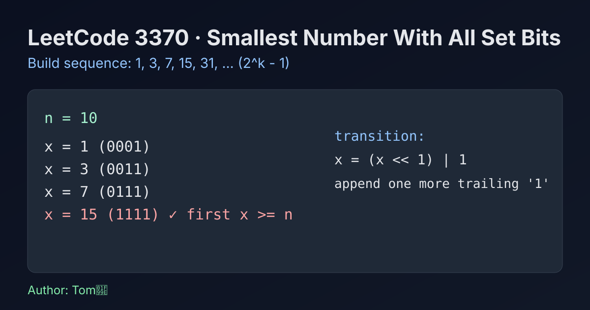

LeetCode 3370: Smallest Number With All Set Bits (Build 2^k-1 Ceiling)
LeetCode 3370Bit ManipulationMathToday we solve LeetCode 3370 - Smallest Number With All Set Bits.
Source: https://leetcode.com/problems/smallest-number-with-all-set-bits/

English
Problem Summary
Given a positive integer n, return the smallest integer x such that x >= n and every bit in the binary representation of x is 1.
Key Insight
Numbers whose bits are all 1 are exactly 1, 3, 7, 15, 31, ..., i.e. 2^k - 1. So we just grow this sequence until it reaches or exceeds n.
Algorithm
- Start with x = 1.
- While x < n, update x = (x << 1) | 1.
- Return x.
Complexity Analysis
Let b be the number of bits of n.
Time: O(b).
Space: O(1).
Common Pitfalls
- Returning the largest all-ones number smaller than n.
- Using floating-point logarithms and hitting precision issues.
- Forgetting n itself may already be all ones.
Reference Implementations (Java / Go / C++ / Python / JavaScript)
class Solution {
public int smallestNumber(int n) {
int x = 1;
while (x < n) {
x = (x << 1) | 1;
}
return x;
}
}func smallestNumber(n int) int {
x := 1
for x < n {
x = (x << 1) | 1
}
return x
}class Solution {
public:
int smallestNumber(int n) {
int x = 1;
while (x < n) {
x = (x << 1) | 1;
}
return x;
}
};class Solution:
def smallestNumber(self, n: int) -> int:
x = 1
while x < n:
x = (x << 1) | 1
return xvar smallestNumber = function(n) {
let x = 1;
while (x < n) {
x = (x << 1) | 1;
}
return x;
};中文
题目概述
给定正整数 n，返回最小的整数 x，满足 x >= n 且 x 的二进制每一位都是 1。
核心思路
二进制全为 1 的数恰好是 1, 3, 7, 15, 31, ...，也就是 2^k - 1。因此不断构造下一个全 1 数，直到不小于 n 即可。
算法步骤
- 初始化 x = 1。
- 当 x < n 时，执行 x = (x << 1) | 1。
- 循环结束后返回 x。
复杂度分析
设 n 的二进制位数为 b。
时间复杂度：O(b)。
空间复杂度：O(1)。
常见陷阱
- 错把“小于 n 的最大全 1 数”当成答案。
- 用浮点对数求位数，可能引入精度问题。
- 忽略 n 本身已经是全 1 的情况。
多语言参考实现（Java / Go / C++ / Python / JavaScript）
class Solution {
public int smallestNumber(int n) {
int x = 1;
while (x < n) {
x = (x << 1) | 1;
}
return x;
}
}func smallestNumber(n int) int {
x := 1
for x < n {
x = (x << 1) | 1
}
return x
}class Solution {
public:
int smallestNumber(int n) {
int x = 1;
while (x < n) {
x = (x << 1) | 1;
}
return x;
}
};class Solution:
def smallestNumber(self, n: int) -> int:
x = 1
while x < n:
x = (x << 1) | 1
return xvar smallestNumber = function(n) {
let x = 1;
while (x < n) {
x = (x << 1) | 1;
}
return x;
};
Comments